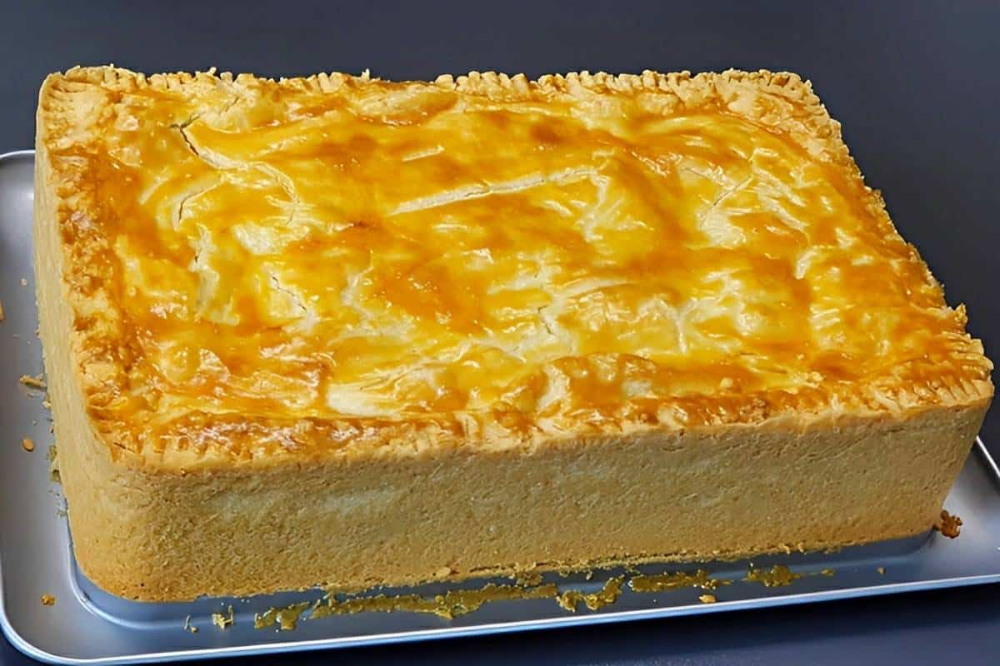

Empadão de Frango
Ingredientes:
- 1 massa de empadão
- 500g de frango desfiado
- 1 cebola picada
- 2 dentes de alho amassados
- 1 copo de leite
- 2 colheres de sopa de manteiga
Modo de Preparo:
- Preaqueça o forno a 180°C.
- Em uma panela, derreta a manteiga e refogue a cebola e o alho.
- Acrescente o frango desfiado e refogue por alguns minutos.
- Adicione o leite e cozinhe até engrossar.
- Despeje a mistura na massa de empadão.
- deixe cozir por 30 minutos ou até dourar.

empadão de frango